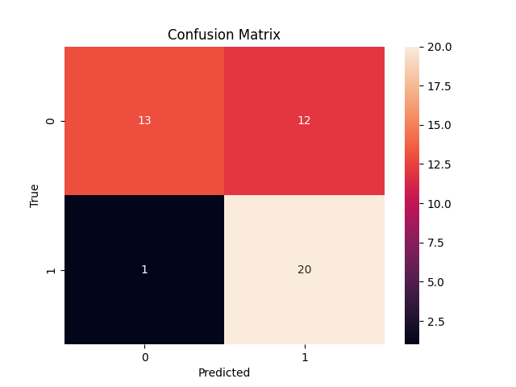

Feature Engineering & Model Development¶
This document describes the complete modeling workflow for the Heart Disease UCI dataset:
- Feature engineering (encoding + scaling)
- Training at least two classification models
- Documented model selection/tuning
- Evaluation using appropriate metrics
- Reproducible pipeline implementation (scripted training)
Primary sources:
- Notebook:
exploration/modeling.ipynb(model experimentation and threshold analysis) - Training pipeline:
src/training.py(cross-validated tuning + MLflow logging) - Preprocessing utilities:
src/preprocessing.py
1. Problem Formulation¶
Task: binary classification to predict heart disease risk.
Target construction (binary):
- Original label
numis multi-class (0–4). - Project target uses:
target = 1ifnum != 0, else0.
This aligns with common clinical framing: any positive diagnosis is treated as “disease present”.
2. Feature Set¶
The modeling notebook explicitly selects a 13-feature input set plus the derived target:
Categorical (discrete/encoded) features
sex,cp,fbs,restecg,exang,slope,ca,thal
Numeric features (standard-scaled)
age,trestbps,chol,thalach
Numeric feature (min-max scaled)
oldpeak
Rationale (from EDA + common practice): most continuous features are approximately well-behaved under standardization, while oldpeak is often skewed and can benefit from bounded scaling.
3. Data Splitting Strategy¶
In exploration/modeling.ipynb, the dataset is split into:
- Train: 70%
- Validation: 15%
- Test: 15%
Important details:
stratifyis used on the target to preserve class proportions across splits.random_state=42ensures repeatability.
Purpose:
- Validation set is used to tune decision threshold (see Section 6).
- Test set is held out for the final unbiased evaluation.
4. Preprocessing / Feature Engineering Pipeline¶
The notebook uses a fully reproducible sklearn ColumnTransformer:
4.1 Numerical preprocessing¶
- Missing values imputed with median (
SimpleImputer(strategy="median")) - Scaling:
- StandardScaler for
age,trestbps,chol,thalach - MinMaxScaler for
oldpeak
4.2 Categorical preprocessing¶
- Missing values imputed with most frequent (
SimpleImputer(strategy="most_frequent")) - One-hot encoding via
OneHotEncoder(handle_unknown="ignore") handle_unknown="ignore"is important for robust inference when previously unseen categories appear.
4.3 Why a pipeline matters (MLOps relevance)¶
This design prevents training/serving skew by ensuring that the exact same transformations used during training are applied at inference time.
5. Candidate Models (Notebook Experimentation)¶
The notebook evaluates multiple classifiers under the same preprocessing pipeline:
- Logistic Regression (
class_weight="balanced") - Random Forest (
n_estimators=400,class_weight="balanced") - Histogram-based Gradient Boosting (
HistGradientBoostingClassifier) - Support Vector Classifier (
SVC(class_weight="balanced")) - Gaussian Naive Bayes (
GaussianNB) - XGBoost (
XGBClassifier, tuned with a conservative learning rate and many estimators)
All candidates are trained as:
Pipeline([("prep", preprocessor), ("clf", model)])
This ensures a fair comparison with identical preprocessing.
6. Threshold Selection (Recall-Constrained Decision Rule)¶
In healthcare-oriented risk prediction, false negatives can be more costly than false positives. The notebook therefore does not rely purely on the default 0.5 threshold.
It defines a helper get_best_threshold(...):
- Sweeps thresholds from 0.00 to 1.00
- Chooses the highest threshold that achieves at least a target recall on validation
Two recall constraints are used in the notebook:
- Candidate comparison:
min_recall=0.99 - Final Logistic Regression selection:
min_recall=0.95
This produces a tuned operating point that prioritizes sensitivity (recall), then reports the resulting precision/accuracy/F1.
Notes on probability handling:
- For models supporting
predict_proba, probabilities are used. - Otherwise,
decision_functionis used as a scoring proxy.
7. Evaluation Metrics¶
The notebook reports standard classification metrics on validation and test:
- Accuracy
- Precision
- Recall
- F1-score
Additionally, it visualizes a confusion matrix for the final selected model on the test set.

Why these metrics:
- Accuracy can be misleading when classes are imbalanced.
- Precision/Recall/F1 provide a better picture of clinical screening tradeoffs.
- Threshold tuning is explicitly tied to a recall target.
8. Final Model Choice (Notebook)¶
After comparing candidates, the notebook fits a final pipeline with:
LogisticRegression(solver="liblinear", max_iter=1000, random_state=42)
and evaluates it using the validation-chosen threshold on the test set.
Rationale for Logistic Regression (typical justifications consistent with the notebook setup):
- Strong baseline for tabular medical data
- Interpretable and stable
- Fast training and suitable for CI/CD retraining loops
9. Scripted, Reproducible Training (Project Pipeline)¶
While the notebook focuses on experimentation and threshold analysis, the production-oriented training flow is implemented in src/training.py.
9.1 Models trained (assignment requirement)¶
The pipeline trains two required models:
- Logistic Regression (with hyperparameter search over
C) - Random Forest (with hyperparameter search over
n_estimators,max_depth,min_samples_split)
9.2 Cross-validation and tuning¶
Both models are tuned with GridSearchCV using:
cv=5scoring="roc_auc"
This meets the assignment requirement to evaluate with cross-validation and a relevant metric (ROC-AUC).
9.3 Metrics collected¶
The pipeline computes and logs (train + test where applicable):
- Accuracy
- Precision
- Recall
- F1
- ROC-AUC
9.4 Model selection¶
The pipeline selects the best model based on test ROC-AUC.
9.5 Artifacts saved¶
The pipeline saves:
models/best_model.pklmodels/preprocessor.pkl
These are the artifacts loaded by the serving API in app.py.
10. How to Reproduce Modeling End-to-End¶
Option A — Notebook exploration¶
Open and run:
exploration/modeling.ipynb
This reproduces the preprocessing pipeline, candidate comparison, threshold tuning, and confusion matrix visualization.
Option B — Reproducible training pipeline (recommended)¶
- Download data:
python download_data.py
- Train + log experiments:
python -c "from src.training import train_pipeline; train_pipeline('data/raw/heart_disease_raw.csv')"
- View experiment tracking UI:
mlflow ui --host 0.0.0.0 --port 5000
This will use the local mlruns/ directory and show runs for Logistic Regression and Random Forest (parameters, metrics, and model artifacts).